វត្ថុបំណង
- ប្រាប់បានពីសញ្ញាណទូទៅនៃសូលីត
- បង្ហាញសូលីតមានរាងធរណីមាត្រងាយៗនិងប្រាប់ពីប្រភេទព្រមទាំងធាតុរបស់វា
- កំណត់សញ្ញាណផ្ទៃក្រឡាខាងនៃសូលីត
- គណនាមាឌនៃសូលីតតាមរូបមន្តមាឌ ។
1. សូលីត
ឧទាហរណ៍ 1 ៖ ធុងសាំង គ្រាប់ឡុកឡាក់ ប្រអប់ដីស... ឱ្យសញ្ញាណនៃសូលីត ។
ឧទាហរណ៍ 2 ៖ នេះជាឧទាហរណ៍ខ្លះៗនៃសូលីត ៖
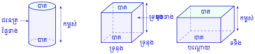
2. មាឌសូលីត
2.1. មាឌប្រលេពីប៉ែតកែង
ឧទាហរណ៍ ៖ គេមានប្រលេពីប៉ែតកែងមួយមានបណ្តោយ 7 ទទឹង 4 និងកម្ពស់ 6 ។
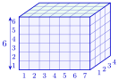
ផ្ទៃបាតមាន \(\displaystyle 7 \times 4 = 28\) ការ៉េឯកតា ។
គេអាចបែងចែកផ្ទៃបាតនៃប្រលេពីប៉ែតកែងជា 28 ការ៉េឯកតាដែលការ៉េនីមួយៗ មានជ្រុងប្រវែង \(\displaystyle 1~\text{cm}\) ។ បើគេដាក់គូបមានទ្រនុង \(\displaystyle 1~\text{cm}\) លើការ៉េនីមួយៗ នោះគេបានមួយស្រទាប់មានកម្ពស់ \(\displaystyle 1~\text{cm}\) និងមានចំនួនគូបសរុបចំនួន 28 គូបឯកតា ។ ប្រលេពីប៉ែតកែងមាន \(\displaystyle 28 \times 6 = 168\) គូបដែលមានទ្រនុង \(\displaystyle 1~\text{cm}\) ។
ដូច្នេះមាឌនៃប្រលេពីប៉ែតកែងគឺ \(\displaystyle 7~\text{cm} \times 4~\text{cm} \times 6~\text{cm} = 168~\text{cm}^3\) ដែលជាផលគុណនៃរង្វាស់វិមាត្រទាំងបី ។
ជាទូទៅ បើ \(\displaystyle a, b, h\) ជារង្វាស់វិមាត្រទាំងបី ហើយ \(\displaystyle \mathcal{A}_B\) ជាផ្ទៃក្រឡាបាត និង \(\displaystyle V\) ជាមាឌនៃប្រលេពីប៉ែតកែងនោះ គេបានរូបមន្ត ៖
លំហាត់គំរូ 1 ៖ រកមាឌហិបឈើមួយមានវិមាត្រ \(\displaystyle 45~\text{dm}\), \(\displaystyle 24~\text{dm}\), \(\displaystyle 12~\text{dm}\) ។
ដំណោះស្រាយ មាឌហិបឈើ ៖
ដូចនេះ មាឌហិបឈើគឺ \(\displaystyle V = 12~960~\text{dm}^3\) ។
លំហាត់គំរូ 2 ៖ ប្រលេពីប៉ែតកែងមួយមានមាឌ \(\displaystyle 83~880~\text{dm}^3\) និងកម្ពស់ \(\displaystyle 3.60~\text{m}\) ។ រកផ្ទៃក្រឡាបាតប្រលេពីប៉ែតកែង ។
ដំណោះស្រាយ គេមាន \(\displaystyle V = 83~880~\text{dm}^3\) និង \(\displaystyle h = 3.60~\text{m} = 36~\text{dm}\) ។ ផ្ទៃក្រឡាបាត ៖
ដូចនេះ \(\displaystyle \mathcal{A}_B = 2~330~\text{dm}^2\) ។
ប្រលេពីប៉ែតកែងមួយមានមាឌ \(\displaystyle 100~352~\text{dm}^3\) និងផ្ទៃក្រឡាបាត \(\displaystyle 35~840~\text{dm}^2\) ។ រកកម្ពស់ប្រលេពីប៉ែតកែងគិតជាម៉ែត្រ ។
មើលចម្លើយ
កម្ពស់ប្រលេពីប៉ែតកែង ៖
ដូចនេះ កម្ពស់ប្រលេពីប៉ែតកែងគឺ \(\displaystyle 0.28~\text{m}\) (សៀវភៅពុម្ពសរសេរ \(\displaystyle 2.8~\text{dm}\)) ។
2.2. មាឌគូប
គូប គឺជាប្រលេពីប៉ែតកែងដែលវិមាត្រទាំងបីមានប្រវែងស្មើៗគ្នា ។ ខ្នាតមាឌ គឺម៉ែត្រគូប (\(\displaystyle \text{m}^3\)) ។ មួយម៉ែត្រគូប គឺជាគូបមានទ្រនុងប្រវែងស្មើនឹង \(\displaystyle 1~\text{m}\) ។
ជាទូទៅ
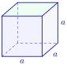
បើ \(\displaystyle V\) ជាមាឌ ហើយ \(\displaystyle a\) ជាទ្រនុងនៃគូបនោះ គេបានរូបមន្ត ៖
\[V = a \times a \times a = a^3\]មាឌនៃគូបស្មើនឹងស្វ័យគុណបីនៃទ្រនុងរបស់វា ៖
\[V = a^3\]ប្រវែងទ្រនុងគូបស្មើនឹងឫសគូបនៃមាឌរបស់វា ៖
\[a = \sqrt[3]{V}\]
លំហាត់គំរូ ៖ គូបមួយមានវិមាត្រ \(\displaystyle 2.5~\text{dam}\) ។ រកមាឌនៃគូបនេះ ។
ដំណោះស្រាយ មាឌគូប ៖
ដូចនេះ \(\displaystyle V = 15.625~\text{dam}^3\) ។
បូណានិងចន្ទបានយកសាប៊ូដែលមានរាងគូបមកបំពេញក្នុងឡាំងឈើមួយ ទៅតាមវិមាត្រនីមួយៗនៃឡាំងឈើអាចដាក់បានសាប៊ូ 6 ដុំ ។
- ក. តើឡាំងឈើនោះមានរាងអ្វី?
- ខ. រកមាឌឡាំងឈើដោយយកដុំសាប៊ូជាឯកតាមាឌ ។
មើលចម្លើយ
- ក. ដោយវិមាត្រទាំងបី (បណ្តោយ ទទឹង កម្ពស់) ដាក់បានសាប៊ូ 6 ដុំស្មើៗគ្នា នោះឡាំងឈើមានរាងជាគូប (ឬប្រលេពីប៉ែតកែងពិសេស) ។
- ខ.
មាឌឡាំងឈើគិតជាដុំសាប៊ូ ៖
\[\begin{aligned} V &= 6 \times 6 \times 6 \\ &= 216~\text{ដុំសាប៊ូ} \end{aligned}\]
ដូចនេះ ក. ប្រលេពីប៉ែតកែង (ឬគូប) ខ. 216 ដុំសាប៊ូ (សៀវភៅពុម្ពសរសេរ 6) ។
2.3. មាឌស៊ីឡាំង
ឧទាហរណ៍ ៖ គេមានព្រីសត្រង់មួយមានបាតជាពហុកោណនិយ័ត ចារឹកក្នុងបាតរង្វង់នៃស៊ីឡាំង ។ បើគេបង្កើនចំនួនជ្រុងនៃបាតព្រីសឱ្យកាន់តែច្រើននោះផ្ទៃបាតនៃព្រីសខិតទៅរកផ្ទៃបាតនៃស៊ីឡាំងហើយព្រីសខិតទៅរកស៊ីឡាំងដែរ ។ គេសន្មតថា មាឌរបស់ស៊ីឡាំងស្មើនឹងផ្ទៃក្រឡាបាតគុណនឹងកម្ពស់ ។
ជាទូទៅ
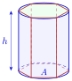
បើ \(\displaystyle h\) ជារង្វាស់កម្ពស់ ហើយ \(\displaystyle \mathcal{A}_B\) ជាផ្ទៃក្រឡាបាត និង \(\displaystyle V\) ជាមាឌនៃស៊ីឡាំងនោះ គេបាន ៖
តែ \(\displaystyle \mathcal{A}_B = \pi R^2\) នាំឱ្យគេបានរូបមន្តមាឌស៊ីឡាំង ៖
លំហាត់គំរូ 1 ៖ ដែកមួយកំណាត់មានរាងស៊ីឡាំងត្រង់មានប្រវែង \(\displaystyle 8~\text{m}\) ។ អង្កត់ផ្ចិតនៃមុខកាត់ស្មើនឹង \(\displaystyle 30~\text{mm}\) ។ គណនាមាឌដែកគិតជា \(\displaystyle \text{dm}^3\) ។ (\(\displaystyle \pi \approx 3.14\))
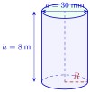
ដំណោះស្រាយ កាំនៃមុខកាត់ ៖
ផ្ទៃក្រឡាបាត ៖
កម្ពស់ដែក \(\displaystyle h = 8~\text{m} = 8~000~\text{mm}\) ។ មាឌដែក ៖
ដោយ \(\displaystyle 5~652~000~\text{mm}^3 = 5.652~\text{dm}^3\) ។ ដូចនេះ \(\displaystyle V = 5.652~\text{dm}^3\) ។
លំហាត់គំរូ 2 ៖ រកមាឌនៃប្រអប់សំបុត្រតាមរូបខាងក្រោម ។ \(\displaystyle \left(\pi \approx \dfrac{22}{7}\right)\)
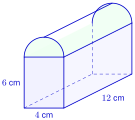
ដំណោះស្រាយ មាឌប្រអប់សំបុត្រ ៖
ដែល \(\displaystyle V_1\) ជាមាឌប្រអប់សំបុត្រគ្មានគម្រប និង \(\displaystyle V_2\) ជាមាឌគម្របប្រអប់ ។
គម្របប្រអប់ជារាងកន្លះស៊ីឡាំងមានកាំ \(\displaystyle R = \dfrac{4}{2} = 2~\text{cm}\) និងបណ្តោយ \(\displaystyle h = 12~\text{cm}\) ៖
ដូចនេះ \(\displaystyle V = 363.428~\text{cm}^3\) ។
សុខាធ្វើបំពង់មួយដោយប្រើក្រដាសកាតុងរាងចតុកោណកែងមានបណ្តោយ \(\displaystyle 96.2~\text{dm}\) និងទទឹង \(\displaystyle 64.8~\text{dm}\) ហើយបិទមុខវាផ្ចិតជាប់គ្នា \(\displaystyle 2~\text{dm}\) ។ តើសុខាត្រូវមូរតាមបណ្តោយឬតាមទទឹងដើម្បីឱ្យបានមាឌបំពង់ធំបំផុត ?
មើលចម្លើយ
- ក.
បើមូរតាមបណ្តោយ ៖ បរិមាត្របាតគឺ \(\displaystyle p = 96.2 - 2 = 94.2~\text{dm}\) និងកម្ពស់ \(\displaystyle h = 64.8~\text{dm}\) ។ កាំរង្វង់បាត ៖
\[R = \frac{94.2}{2 \times 3.14} = 15~\text{dm}\]មាឌបំពង់ ៖
\[\begin{aligned} V_1 &= \pi R^2 h \\ &= 3.14 \times 15^2 \times 64.8 \\ &= 45~781.2~\text{dm}^3 \end{aligned}\] - ខ.
បើមូរតាមទទឹង ៖ បរិមាត្របាតគឺ \(\displaystyle p = 64.8 - 2 = 62.8~\text{dm}\) និងកម្ពស់ \(\displaystyle h = 96.2~\text{dm}\) ។ កាំរង្វង់បាត ៖
\[R = \frac{62.8}{2 \times 3.14} = 10~\text{dm}\]មាឌបំពង់ ៖
\[\begin{aligned} V_2 &= \pi R^2 h \\ &= 3.14 \times 10^2 \times 96.2 \\ &= 30~206.8~\text{dm}^3 \end{aligned}\]
ដោយ \(\displaystyle 45~781.2~\text{dm}^3 > 30~206.8~\text{dm}^3\) ដូចនេះសុខាត្រូវមូរតាមបណ្តោយ ដែលបានមាឌ \(\displaystyle V = 45~781.2~\text{dm}^3\) ។
3. ផ្ទៃក្រឡាខាងសូលីត
3.1. ផ្ទៃក្រឡាខាងប្រលេពីប៉ែតកែងនិងគូប
ឧទាហរណ៍ ៖ គេមានប្រលេពីប៉ែតកែងមួយមានទ្រនុង \(\displaystyle a, b, c\) ធ្វើពីក្រដាស ។ បើគេកាត់ប្រលេពីប៉ែតកែងតាមទ្រនុង និងតាមជុំវិញបាតទាំងពីរ រួចលាតសន្ធឹងវានៅលើប្លង់មួយ នោះគេបានផ្ទៃមួយផ្សំដោយបាតទាំងពីរនៃប្រលេពីប៉ែតកែងនិងផ្នែកមួយទៀតរាងចតុកោណកែងមួយមានបណ្តោយស្មើនឹងបរិមាត្រនៃបាត \(\displaystyle p\) និងទទឹងស្មើនឹងកម្ពស់ \(\displaystyle h\) ។
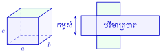
ជាទូទៅ
ផ្ទៃក្រឡាខាងនៃប្រលេពីប៉ែតកែង ៖
\[\mathcal{A}_L = p \times h = 2(a+b) \times h\]ផ្ទៃក្រឡាទាំងអស់នៃប្រលេពីប៉ែតកែង ៖
\[\mathcal{A}_T = 2\mathcal{A}_B + \mathcal{A}_L\]
សម្គាល់ ៖ បើព្រីសត្រង់មានបាតជាចតុកោណកែង នោះគេហៅថា ប្រលេពីប៉ែតកែង ។ បើមុខទាំង 6 នៃប្រលេពីប៉ែតកែងជាការ៉េប៉ុនគ្នា នោះគេហៅថា គូប ។
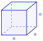
ជាទូទៅ
ផ្ទៃក្រឡាខាងនៃគូប ៖
\[\mathcal{A}_L = p \times h = 4a \times a = 4a^2\]ផ្ទៃក្រឡាទាំងអស់នៃគូប ៖
\[\mathcal{A}_T = 4a^2 + 2a^2 = 6a^2\]
លំហាត់គំរូ ៖ គណនាផ្ទៃក្រឡាខាងទាំងអស់នៃដុំសាប៊ូតាមរូបខាងស្តាំ ។
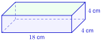
ដំណោះស្រាយ ដោយដុំសាប៊ូរាងជាប្រលេពីប៉ែតកែងមានបាតជាការ៉េមានជ្រុង \(\displaystyle a = 4~\text{cm}\) និងកម្ពស់ \(\displaystyle h = 18~\text{cm}\) ៖ ផ្ទៃក្រឡាខាង ៖
ផ្ទៃក្រឡាបាត ៖
ផ្ទៃក្រឡាទាំងអស់ ៖
ដូចនេះ \(\displaystyle \mathcal{A}_T = 320~\text{cm}^2\) ។
គណនាផ្ទៃក្រឡាខាងទាំងអស់នៃគូបដែលមានទ្រនុង \(\displaystyle 184~\text{mm}\) ។
មើលចម្លើយ
ផ្ទៃក្រឡាទាំងអស់នៃគូប ៖
ដូចនេះ \(\displaystyle \mathcal{A}_T = 203~136~\text{mm}^2\) ។
3.2. ផ្ទៃក្រឡាខាងនៃស៊ីឡាំង
ឧទាហរណ៍ ៖ បើគេវះពន្លាតកំប៉ុងមួយមានរាងស៊ីឡាំងមកដាក់នៅលើប្លង់មួយ នោះគេបានចតុកោណកែងមួយ និងរង្វង់ពីរដែលមានបណ្តោយជាបរិមាត្រនៃថាសបាត និងទទឹងរបស់វាជាកម្ពស់នៃស៊ីឡាំង ។
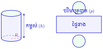
ជាទូទៅ
ផ្ទៃក្រឡាខាងនៃស៊ីឡាំង = បរិមាត្ររង្វង់បាត \(\displaystyle \times\) កម្ពស់
\[\mathcal{A}_L = p \times h = 2\pi Rh\]ផ្ទៃក្រឡាទាំងអស់នៃស៊ីឡាំង = ផ្ទៃក្រឡាខាង + \(\displaystyle 2 \times\) ផ្ទៃក្រឡាបាត
\[\mathcal{A}_T = 2\pi Rh + 2\pi R^2\]
លំហាត់គំរូ 1 ៖ គណនាផ្ទៃក្រឡាខាងបំពង់ទឹកដែល \(\displaystyle D = 0.8~\text{m}\), \(\displaystyle h = 17~\text{m}\) ។ \(\displaystyle \left(\pi \approx \dfrac{22}{7}\right)\)
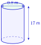
ដំណោះស្រាយ កាំបំពង់ទឹក ៖
ផ្ទៃក្រឡាខាងបំពង់ទឹក ៖
ដូចនេះ \(\displaystyle \mathcal{A}_L \approx 42.74~\text{m}^2\) ។
លំហាត់គំរូ 2 ៖ គណនាផ្ទៃក្រឡាទាំងអស់នៃធុងសាំងមួយមាន \(\displaystyle h = 1.50~\text{m}\), \(\displaystyle R = 0.4~\text{m}\) ។ (\(\displaystyle \pi \approx 3.14\))
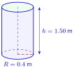
ដំណោះស្រាយ ផ្ទៃក្រឡាខាង ៖
ផ្ទៃក្រឡាបាតទាំងពីរ ៖
ផ្ទៃក្រឡាទាំងអស់ ៖
ដូចនេះ \(\displaystyle \mathcal{A}_T = 4.7728~\text{m}^2\) ។
ស៊ីឡាំងមួយមានមាឌ \(\displaystyle 1550.25~\text{dm}^3\) និងកម្ពស់ \(\displaystyle 12.5~\text{dm}\) ។
- ក. គណនាផ្ទៃក្រឡាបាត
- ខ. គណនាប្រវែងកាំ \(\displaystyle \left(\pi \approx \dfrac{22}{7} \text{ រួចមើលតារាងការ៉េ}\right)\)
- គ. គណនាផ្ទៃក្រឡាទាំងអស់ ។
មើលចម្លើយ
- ក.
ផ្ទៃក្រឡាបាត ៖
\[\begin{aligned} \mathcal{A}_B &= \frac{V}{h} \\ &= \frac{1550.25}{12.5} \\ &= 124.02~\text{dm}^2 \end{aligned}\] - ខ.
កាំនៃរង្វង់បាត ៖
\[\begin{aligned} \mathcal{A}_B &= \pi R^2 \\ R^2 &= \frac{\mathcal{A}_B}{\pi} \\ &= \frac{124.02}{\frac{22}{7}} \\ &= \frac{124.02 \times 7}{22} \\ &= \frac{868.14}{22} \approx 39.4609 \end{aligned}\]គេបាន \(\displaystyle R = \sqrt{39.4609} \approx 6.28~\text{dm}\) ។
- គ.
ផ្ទៃក្រឡាទាំងអស់ ៖
\[\begin{aligned} \mathcal{A}_T &= 2\pi Rh + 2\mathcal{A}_B \\ &= 2 \times \frac{22}{7} \times 6.28 \times 12.5 + 2 \times 124.02 \\ &= \frac{3~454}{7} + 248.04 \\ &\approx 493.43 + 248.04 \\ &= 741.47~\text{dm}^2 \end{aligned}\]
ដូចនេះ ក. \(\displaystyle 124.02~\text{dm}^2\) ខ. \(\displaystyle 6.28~\text{dm}\) គ. \(\displaystyle 741.46~\text{dm}^2\) (តាមសៀវភៅពុម្ព \(\displaystyle 741.46~\text{dm}^2\)) ។
លំហាត់
រកផ្ទៃក្រឡាទាំងអស់នៃព្រីសនីមួយៗខាងក្រោម ៖
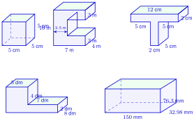
មើលដំណោះស្រាយ
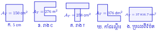
- ក.
គូបមានទ្រនុង \(\displaystyle a = 5~\text{cm}\) ៖
\[\begin{aligned} \mathcal{A}_T &= 6a^2 \\ &= 6 \times 5^2 \\ &= 6 \times 25 \\ &= 150~\text{cm}^2 \end{aligned}\] - ខ.
ព្រីសរាងអក្សរ C (ខ្នាតគិតជា \(\displaystyle \text{m}\)) ៖ បាតមានផ្ទៃស្មើផ្ទៃចតុកោណកែងធំ \(\displaystyle 7 \times 10\) ដកប្រហោង \(\displaystyle (7 - 3.5) \times (10 - 3 - 3) = 3.5 \times 4\) ៖
\[\mathcal{A}_B = 7 \times 10 - 3.5 \times 4 = 70 - 14 = 56~\text{m}^2\]បរិមាត្របាត ៖
\[p = 10 + 7 + 3 + 3.5 + 4 + 3.5 + 3 + 7 = 41~\text{m}\]កម្ពស់ (ជម្រៅព្រីស) \(\displaystyle h = 4~\text{m}\) ៖
\[\mathcal{A}_L = p \times h = 41 \times 4 = 164~\text{m}^2\]\[\mathcal{A}_T = 2\mathcal{A}_B + \mathcal{A}_L = 2 \times 56 + 164 = 112 + 164 = 276~\text{m}^2\] - គ.
ព្រីសរាងអក្សរ T (ខ្នាតគិតជា \(\displaystyle \text{cm}\)) ៖ បាតផ្សំដោយចតុកោណកែងផ្តេក \(\displaystyle 12 \times 2\) និងបញ្ឈរ \(\displaystyle 2 \times 5\) ៖
\[\mathcal{A}_B = 12 \times 2 + 2 \times 5 = 24 + 10 = 34~\text{cm}^2\]បរិមាត្របាត ៖
\[p = 12 + 2 + 5 + 5 + 2 + 5 + 5 + 2 = 38~\text{cm}\]កម្ពស់ (ជម្រៅព្រីស) \(\displaystyle h = 5~\text{cm}\) ៖
\[\mathcal{A}_L = p \times h = 38 \times 5 = 190~\text{cm}^2\]\[\mathcal{A}_T = 2\mathcal{A}_B + \mathcal{A}_L = 2 \times 34 + 190 = 68 + 190 = 258~\text{cm}^2\] - ឃ.
ព្រីសរាងកាំជណ្តើរ (ខ្នាតគិតជា \(\displaystyle \text{dm}\)) ៖ បាតផ្សំដោយចតុកោណកែងឆ្វេង \(\displaystyle 5 \times (2 + 4) = 5 \times 6 = 30~\text{dm}^2\) និងស្តាំ \(\displaystyle 7 \times 2 = 14~\text{dm}^2\) ៖
\[\mathcal{A}_B = 30 + 14 = 44~\text{dm}^2\]បរិមាត្របាត ៖
\[p = 12 + 2 + 7 + 4 + 5 + 6 = 36~\text{dm}\]កម្ពស់ (ជម្រៅព្រីស) \(\displaystyle h = 8~\text{dm}\) ៖
\[\mathcal{A}_L = p \times h = 36 \times 8 = 288~\text{dm}^2\]\[\mathcal{A}_T = 2\mathcal{A}_B + \mathcal{A}_L = 2 \times 44 + 288 = 88 + 288 = 376~\text{dm}^2\] - ង.
ប្រលេពីប៉ែតកែងមានវិមាត្រ \(\displaystyle 150~\text{mm}\), \(\displaystyle 32.98~\text{mm}\), \(\displaystyle 76.3~\text{mm}\) ៖
\[\begin{aligned} \mathcal{A}_T &= 2(ab + bh + ah) \\ &= 2(150 \times 32.98 + 32.98 \times 76.3 + 150 \times 76.3) \\ &= 2(4~947 + 2~516.374 + 11~445) \\ &= 2 \times 18~908.374 \\ &= 37~816.748~\text{mm}^2 \end{aligned}\]
ដូចនេះ ផ្ទៃក្រឡាទាំងអស់នៃព្រីសនីមួយៗគឺ ៖ ក. \(\displaystyle 150~\text{cm}^2\) ខ. \(\displaystyle 276~\text{m}^2\) គ. \(\displaystyle 258~\text{cm}^2\) ឃ. \(\displaystyle 376~\text{dm}^2\) ង. \(\displaystyle 37~816.748~\text{mm}^2\) ។
- ក.
រកមាឌនិងផ្ទៃក្រឡាទាំងអស់នៃរូបនីមួយៗខាងក្រោម ៖
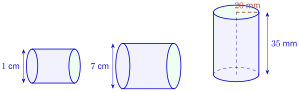
មើលដំណោះស្រាយ
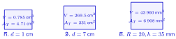
- ក.
ស៊ីឡាំងទី 1 ៖ ក្នុងរូបមានអង្កត់ផ្ចិត \(\displaystyle d = 1~\text{cm} \implies R = 0.5~\text{cm}\) (សៀវភៅពុម្ពមិនបានដាក់ប្រវែងបណ្តោយ \(\displaystyle h\)) ។ បើសន្មត \(\displaystyle h = 1~\text{cm}\) ៖
\[\begin{aligned} V &= \pi R^2 h = 3.14 \times (0.5)^2 \times 1 = 0.785~\text{cm}^3 \\ \mathcal{A}_T &= 2\pi Rh + 2\pi R^2 = 2 \times 3.14 \times 0.5 \times 1 + 2 \times 3.14 \times 0.25 \\ &= 3.14 + 1.57 = 4.71~\text{cm}^2 \end{aligned}\](ជារួមតាមរូបមន្ត ៖ \(\displaystyle V = 0.25\pi h = 0.785h~\text{cm}^3\), \(\displaystyle \mathcal{A}_T = \pi h + 0.5\pi = 3.14h + 1.57~\text{cm}^2\)) ។
- ខ.
ស៊ីឡាំងទី 2 ៖ ក្នុងរូបមានអង្កត់ផ្ចិត \(\displaystyle d = 7~\text{cm} \implies R = 3.5~\text{cm}\) (សៀវភៅពុម្ពមិនបានដាក់ប្រវែងបណ្តោយ \(\displaystyle h\)) ។ យក \(\displaystyle \pi \approx \frac{22}{7}\) បើសន្មត \(\displaystyle h = 7~\text{cm}\) ៖
\[\begin{aligned} V &= \pi R^2 h = \frac{22}{7} \times (3.5)^2 \times 7 = 22 \times 12.25 = 269.5~\text{cm}^3 \\ \mathcal{A}_T &= 2\pi Rh + 2\pi R^2 = 2 \times \frac{22}{7} \times 3.5 \times 7 + 2 \times \frac{22}{7} \times 12.25 \\ &= 154 + 77 = 231~\text{cm}^2 \end{aligned}\](ជារួមតាមរូបមន្ត ៖ \(\displaystyle V = 38.5h~\text{cm}^3\), \(\displaystyle \mathcal{A}_T = 22h + 77~\text{cm}^2\)) ។
- គ.
ស៊ីឡាំងទី 3 ៖ មានកាំ \(\displaystyle R = 20~\text{mm}\) និងកម្ពស់ \(\displaystyle h = 35~\text{mm}\) (\(\displaystyle \pi \approx 3.14\)) ៖
\[\begin{aligned} V &= \pi R^2 h \\ &= 3.14 \times 20^2 \times 35 \\ &= 3.14 \times 400 \times 35 \\ &= 43~960~\text{mm}^3 \end{aligned}\]\[\begin{aligned} \mathcal{A}_L &= 2\pi Rh = 2 \times 3.14 \times 20 \times 35 = 4~396~\text{mm}^2 \\ \mathcal{A}_B &= \pi R^2 = 3.14 \times 400 = 1~256~\text{mm}^2 \\ \mathcal{A}_T &= \mathcal{A}_L + 2\mathcal{A}_B = 4~396 + 2 \times 1~256 = 4~396 + 2~512 = 6~908~\text{mm}^2 \end{aligned}\](បើ \(\displaystyle 20~\text{mm}\) ជាអង្កត់ផ្ចិត នោះ \(\displaystyle R = 10~\text{mm}\) នាំឱ្យ \(\displaystyle V = 10~990~\text{mm}^3\) និង \(\displaystyle \mathcal{A}_T = 2~826~\text{mm}^2\)) ។
ដូចនេះ ស៊ីឡាំងទី 3 ៖ \(\displaystyle V = 43~960~\text{mm}^3\), \(\displaystyle \mathcal{A}_T = 6~908~\text{mm}^2\) (សម្រាប់រូបទី 1 និងទី 2 សៀវភៅពុម្ពខ្វះរង្វាស់កម្ពស់ \(\displaystyle h\)) ។
- ក.
ស្ពាន់មួយមានប្រវែង \(\displaystyle 150~\text{m}\) មានអង្កត់ផ្ចិត \(\displaystyle 0.6~\text{cm}\) ។ រកម៉ាសនៃស្ពាន់នោះ (\(\displaystyle \pi \approx 3.14\) ហើយស្ពាន់មានម៉ាសមាឌ \(\displaystyle 8.9~\text{kg/dm}^3\)) ។
មើលដំណោះស្រាយ
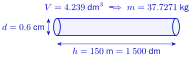
ប្តូរខ្នាតជាដេស៊ីម៉ែត្រ (\(\displaystyle \text{dm}\)) ៖ ប្រវែងស្ពាន់ \(\displaystyle h = 150~\text{m} = 1~500~\text{dm}\) ។ អង្កត់ផ្ចិត \(\displaystyle d = 0.6~\text{cm} = 0.06~\text{dm} \implies R = \frac{0.06}{2} = 0.03~\text{dm}\) ។ ផ្ទៃក្រឡាបាត ៖
\[\begin{aligned} \mathcal{A}_B &= \pi R^2 \\ &= 3.14 \times (0.03)^2 \\ &= 3.14 \times 0.0009 \\ &= 0.002826~\text{dm}^2 \end{aligned}\]មាឌនៃស្ពាន់ ៖
\[\begin{aligned} V &= \mathcal{A}_B \times h \\ &= 0.002826 \times 1~500 \\ &= 4.239~\text{dm}^3 \end{aligned}\]ម៉ាសនៃស្ពាន់ ៖
\[\begin{aligned} m &= V \times \rho \\ &= 4.239~\text{dm}^3 \times 8.9~\text{kg/dm}^3 \\ &= 37.7271~\text{kg} \end{aligned}\]ដូចនេះ ម៉ាសនៃស្ពាន់គឺ \(\displaystyle m = 37.7271~\text{kg}\) ។
រថយន្តមួយមានធុងសាំងរាងស៊ីឡាំងដែលមានអង្កត់ផ្ចិត \(\displaystyle 68~\text{cm}\) និងបណ្តោយ \(\displaystyle 42~\text{cm}\) ។
- ក. រកចំណុះធុងសាំងរថយន្ត ។ \(\displaystyle \left(\pi \approx \dfrac{22}{7}\right)\)
- ខ. បើធុងសាំងនោះមានសាំងពេញ ។ រថយន្តធ្វើដំណើរពីភ្នំពេញឆ្ពោះទៅកាន់ខេត្តព្រះវិហារដែលមានចម្ងាយផ្លូវ \(\displaystyle 294~\text{km}\) (តាមផ្លូវជាតិលេខ 64) ហើយស្អែកឡើងត្រលប់មកវិញ ។ តើគេត្រូវទិញសាំងថែមទៀតឬទេ ? ដោយដឹងថារថយន្តនោះស៊ីសាំង \(\displaystyle 8.7~\text{L}\) ក្នុង \(\displaystyle 100~\text{km}\) ។
មើលដំណោះស្រាយ
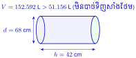
- ក.
កាំរង្វង់បាតធុងសាំង \(\displaystyle R = \dfrac{68}{2} = 34~\text{cm}\) និងកម្ពស់ (បណ្តោយ) \(\displaystyle h = 42~\text{cm}\) ៖ មាឌធុងសាំង ៖
\[\begin{aligned} V &= \pi R^2 h \\ &= \frac{22}{7} \times 34^2 \times 42 \\ &= 22 \times 1~156 \times 6 \\ &= 152~592~\text{cm}^3 \end{aligned}\]ដោយ \(\displaystyle 1~\text{L} = 1~000~\text{cm}^3\) នាំឱ្យ \(\displaystyle V = 152.592~\text{L}\) ។ ដូចនេះ ចំណុះធុងសាំងរថយន្តគឺ \(\displaystyle 152.592~\text{L}\) ។
- ខ.
ចម្ងាយផ្លូវទៅមក ៖
\[s = 294 \times 2 = 588~\text{km}\]បរិមាណសាំងដែលរថយន្តស៊ីសម្រាប់ចម្ងាយ \(\displaystyle 588~\text{km}\) ៖
\[\begin{aligned} \text{សាំងប្រើប្រាស់} &= \frac{588 \times 8.7}{100} \\ &= \frac{5~115.6}{100} \\ &= 51.156~\text{L} \end{aligned}\]ដោយសាំងពេញធុងមាន \(\displaystyle 152.592~\text{L} > 51.156~\text{L}\) (នៅសល់ \(\displaystyle 152.592 - 51.156 = 101.436~\text{L}\)) ។
ដូចនេះ គេមិនបាច់ទិញសាំងថែមទៀតទេ ។
ផ្ទះមួយមានរាងប្រលេពីប៉ែតកែងមានដំបូលជារាងព្រីសត្រង់បន្តុបពីលើ (ដូចរូបខាងស្តាំ) ។
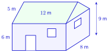
- ក. គណនាមាឌផ្ទះនោះ
- ខ. បើគេប្រក់ក្បឿងផ្ទះនោះ 25 សន្លឹកក្នុង \(\displaystyle 1~\text{m}^2\) ហើយបែកអស់ 5% នៅពេលប្រក់ ។ តើគេត្រូវប្រើក្បឿងប៉ុន្មានសន្លឹក ?
- គ. តើគេត្រូវចំណាយអស់ប្រាក់ប៉ុន្មាន បើក្បឿងមួយសន្លឹកថ្លៃ 438.50 រៀល ?
- ឃ. គេលាបជញ្ជាំងពីខាងក្នុង ខាងក្រៅនិងពិដានដែលដាក់ត្រឹមកម្ពស់ជញ្ជាំង ។ ផ្ទៃក្រឡាទ្វារនិងបង្អួចស្មើនឹង \(\displaystyle \dfrac{1}{4}\) នៃផ្ទៃក្រឡាជញ្ជាំង ។ ថ្នាំលាប \(\displaystyle 350~\text{g}\) អាចលាបបាន \(\displaystyle 1~\text{m}^2\) ។ តើគេត្រូវចំណាយប្រាក់ប៉ុន្មានរៀល បើថ្នាំលាបមួយកំប៉ុងមានម៉ាស \(\displaystyle 5~\text{kg}\) មានតម្លៃ 49 600 រៀល ?
មើលដំណោះស្រាយ
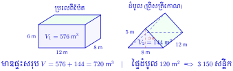
- ក.
មាឌផ្ទះផ្សំដោយ ៖ - មាឌប្រលេពីប៉ែតកែង (ផ្នែកខាងក្រោម) ៖
\[V_1 = 12 \times 8 \times 6 = 576~\text{m}^3\]- មាឌដំបូលរាងព្រីសត្រីកោណ ៖ កម្ពស់ត្រីកោណដំបូលគឺ \(\displaystyle 9 - 6 = 3~\text{m}\) និងបាត \(\displaystyle 8~\text{m}\) ៖
\[\mathcal{A}_{\text{បាតព្រីស}} = \frac{1}{2} \times 8 \times 3 = 12~\text{m}^2\]\[V_2 = 12 \times 12 = 144~\text{m}^3\]មាឌផ្ទះសរុប ៖
\[V = V_1 + V_2 = 576 + 144 = 720~\text{m}^3\] - ខ.
ផ្ទៃក្រឡាដំបូលដែលត្រូវប្រក់ក្បឿងមាន 2 ផ្ទាំងរាងចតុកោណកែង (បណ្តោយ \(\displaystyle 12~\text{m}\) ទទឹងចំណោត \(\displaystyle 5~\text{m}\)) ៖
\[\mathcal{A}_{\text{ដំបូល}} = 2 \times (12 \times 5) = 120~\text{m}^2\]ចំនួនក្បឿងសម្រាប់ផ្ទៃដំបូល ៖
\[120 \times 25 = 3~000~\text{សន្លឹក}\]ដោយបែកអស់ 5% នៅពេលប្រក់ ៖ - បើគិតក្បឿងបម្រុងទុក 5% លើចំនួន 3000 សន្លឹក ៖
\[3~000 + 3~000 \times 5\% = 3~000 + 150 = 3~150~\text{សន្លឹក}\](បើគិតក្បឿងសរុប \(\displaystyle N\) ដែល \(\displaystyle 95\% N = 3~000\) នោះ \(\displaystyle N = \frac{3~000}{0.95} \approx 3~158\) សន្លឹក) ។
- គ.
ប្រាក់ចំណាយទិញក្បឿង (សម្រាប់ 3 150 សន្លឹក) ៖
\[\begin{aligned} \text{ប្រាក់ទិញក្បឿង} &= 3~150 \times 438.50 \\ &= 1~381~275~\text{រៀល} \end{aligned}\](បើ 3 158 សន្លឹក ៖ \(\displaystyle 3~158 \times 438.50 = 1~384~583\) រៀល; បើគិតតែ 3000 សន្លឹក ៖ \(\displaystyle 1~315~500\) រៀល) ។
- ឃ.
គណនាប្រាក់ចំណាយទិញថ្នាំលាប ៖ - ផ្ទៃក្រឡាជញ្ជាំងជុំវិញ (កម្ពស់ \(\displaystyle 6~\text{m}\)) ៖
\[\mathcal{A}_{\text{ជញ្ជាំង}} = 2(12 + 8) \times 6 = 40 \times 6 = 240~\text{m}^2\]- ផ្ទៃទ្វារនិងបង្អួចស្មើនឹង \(\displaystyle \frac{1}{4}\mathcal{A}_{\text{ជញ្ជាំង}} = \frac{1}{4} \times 240 = 60~\text{m}^2\) ៖ ផ្ទៃជញ្ជាំងត្រូវលាបមួយជុំ \(\displaystyle = 240 - 60 = 180~\text{m}^2\) ។ លាបទាំងខាងក្នុងនិងខាងក្រៅ ៖
\[\mathcal{A}_{\text{ជញ្ជាំងលាប}} = 180 \times 2 = 360~\text{m}^2\]- ផ្ទៃពិដាន (រាងចតុកោណកែង \(\displaystyle 12~\text{m} \times 8~\text{m}\)) ៖
\[\mathcal{A}_{\text{ពិដាន}} = 12 \times 8 = 96~\text{m}^2\]ផ្ទៃក្រឡាសរុបត្រូវលាប ៖
\[\mathcal{A}_{\text{សរុប}} = 360 + 96 = 456~\text{m}^2\](ចំណាំ ៖ បើរាប់បញ្ចូលទាំងហោជាងត្រីកោណខាងក្រៅ \(\displaystyle 2 \times 12 = 24~\text{m}^2\) នោះផ្ទៃសរុបគឺ \(\displaystyle 480~\text{m}^2\)) ។ - ម៉ាសថ្នាំលាបត្រូវការ (សម្រាប់ \(\displaystyle 456~\text{m}^2\)) ៖
\[456 \times 350~\text{g} = 159~600~\text{g} = 159.6~\text{kg}\]- ចំនួនកំប៉ុងថ្នាំលាប (មួយកំប៉ុង \(\displaystyle 5~\text{kg}\)) ៖
\[\frac{159.6}{5} = 31.92 \approx 32~\text{កំប៉ុង}\]- ប្រាក់ចំណាយទិញថ្នាំលាប (ទិញ 32 កំប៉ុង) ៖
\[32 \times 49~600 = 1~587~200~\text{រៀល}\](បើទិញគិតតាមបរិមាណជាក់ស្តែង \(\displaystyle 31.92 \times 49~600 = 1~583~232\) រៀល; បើផ្ទៃ \(\displaystyle 480~\text{m}^2\) ត្រូវការ \(\displaystyle 168~\text{kg} \implies 34\) កំប៉ុង \(\displaystyle = 1~686~400\) រៀល) ។
ដូចនេះ ក. \(\displaystyle V = 720~\text{m}^3\) ខ. \(\displaystyle 3~150\) សន្លឹក គ. \(\displaystyle 1~381~275\) រៀល ឃ. \(\displaystyle 1~587~200\) រៀល (32 កំប៉ុង) ។
ខ្លឹមសារ៖ សៀវភៅពុម្ពគណិតវិទ្យាថ្នាក់ទី៧ របស់ក្រសួងអប់រំ យុវជន និងកីឡា · វាយអត្ថបទ គូររូបភាពឡើងវិញ និងរៀបចំលើអនឡាញដោយលោកគ្រូ សាន សុខលី សម្រាប់ការសិក្សាដោយឥតគិតថ្លៃ និងមិនរកប្រាក់ចំណេញ។ មិនមែនជាការបោះពុម្ពផ្លូវការរបស់ក្រសួងទេ។